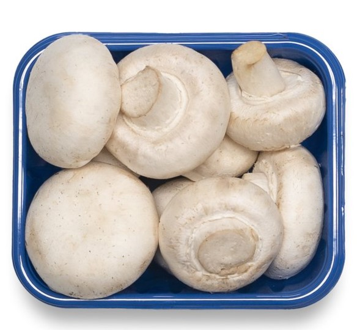
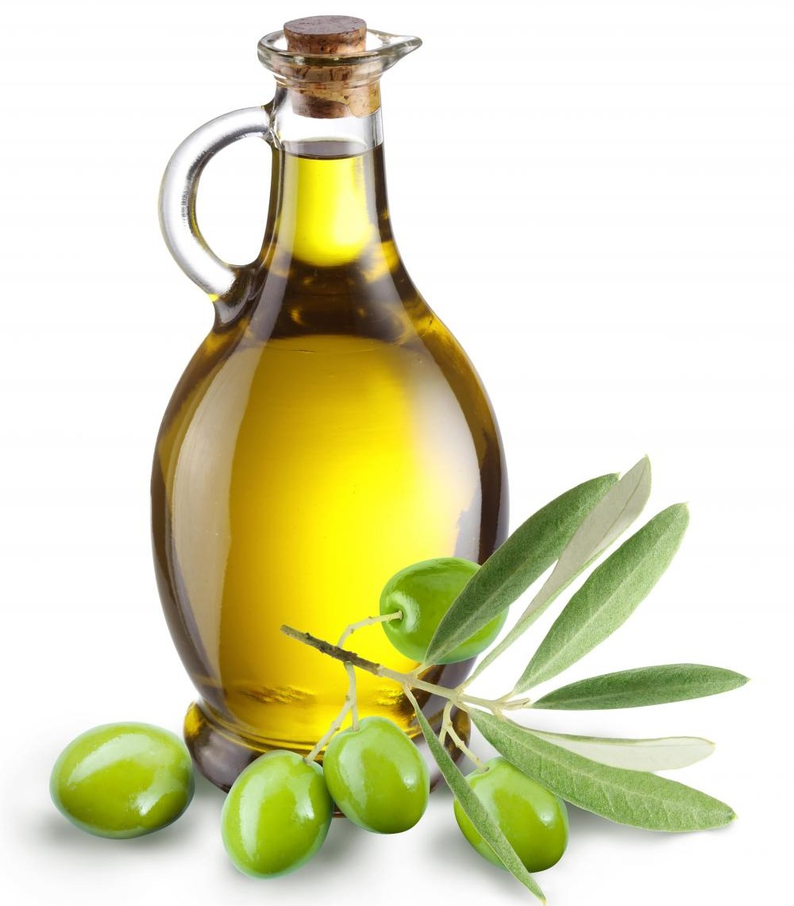
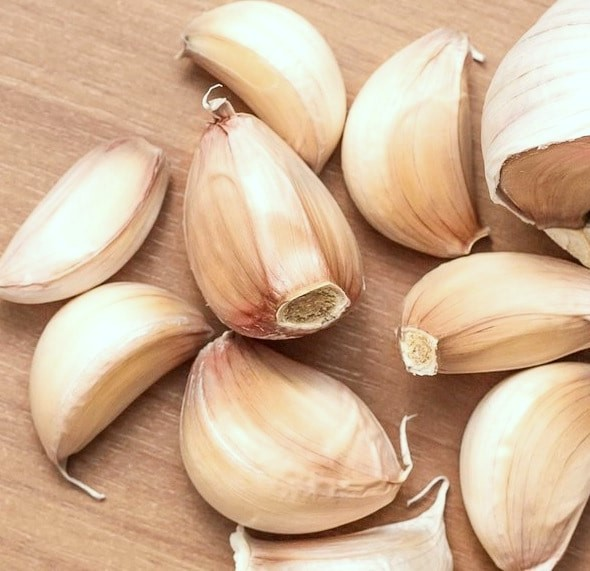
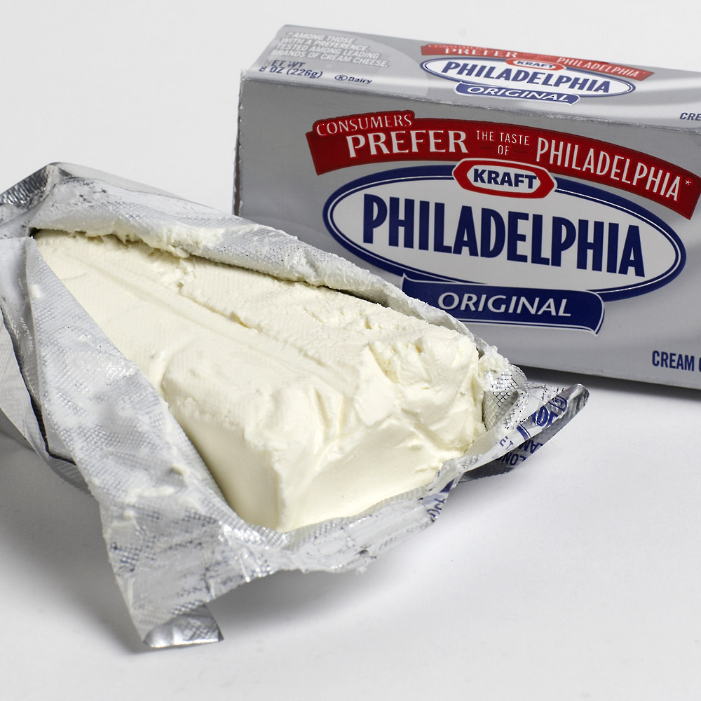
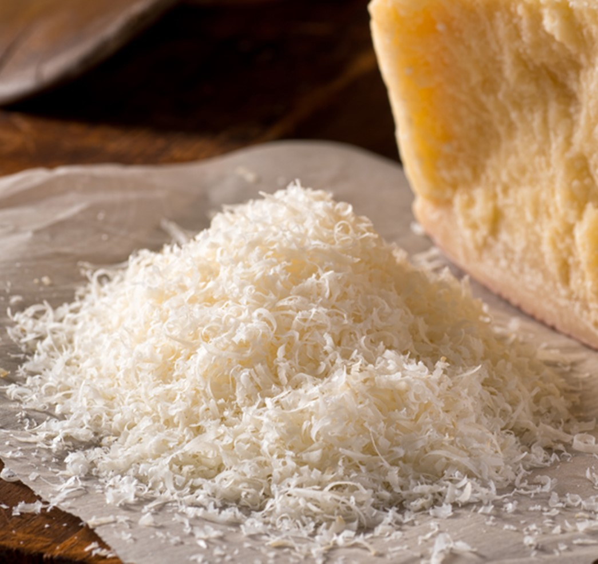
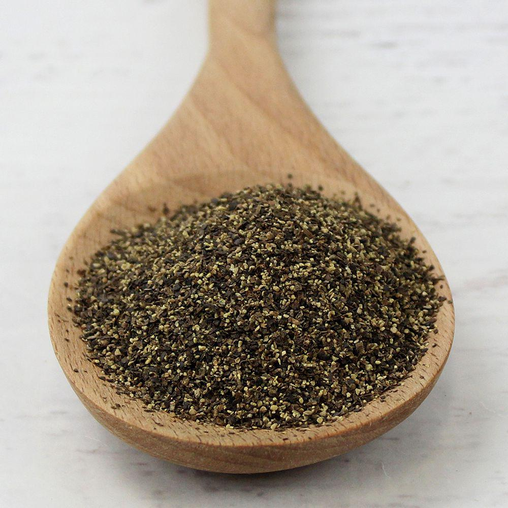
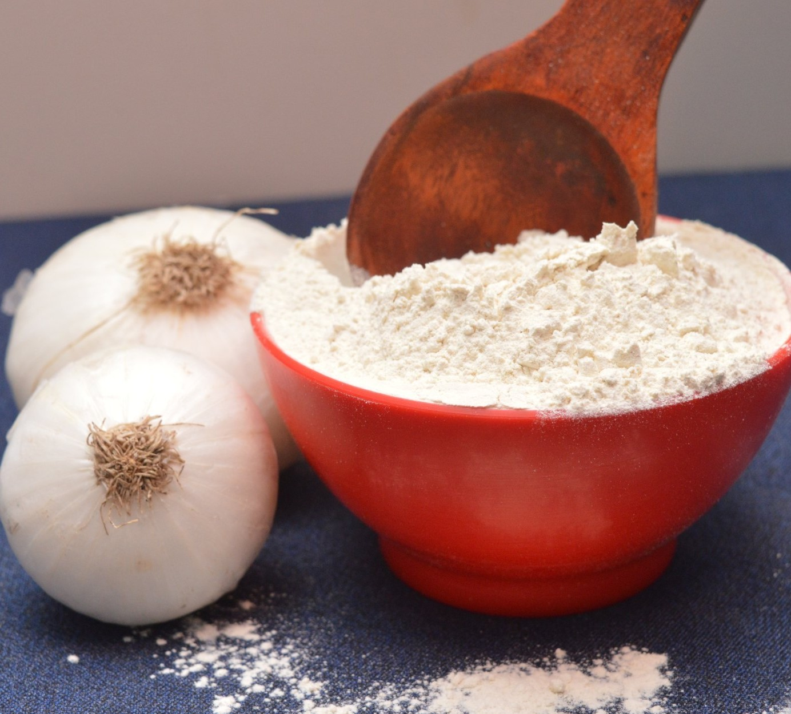
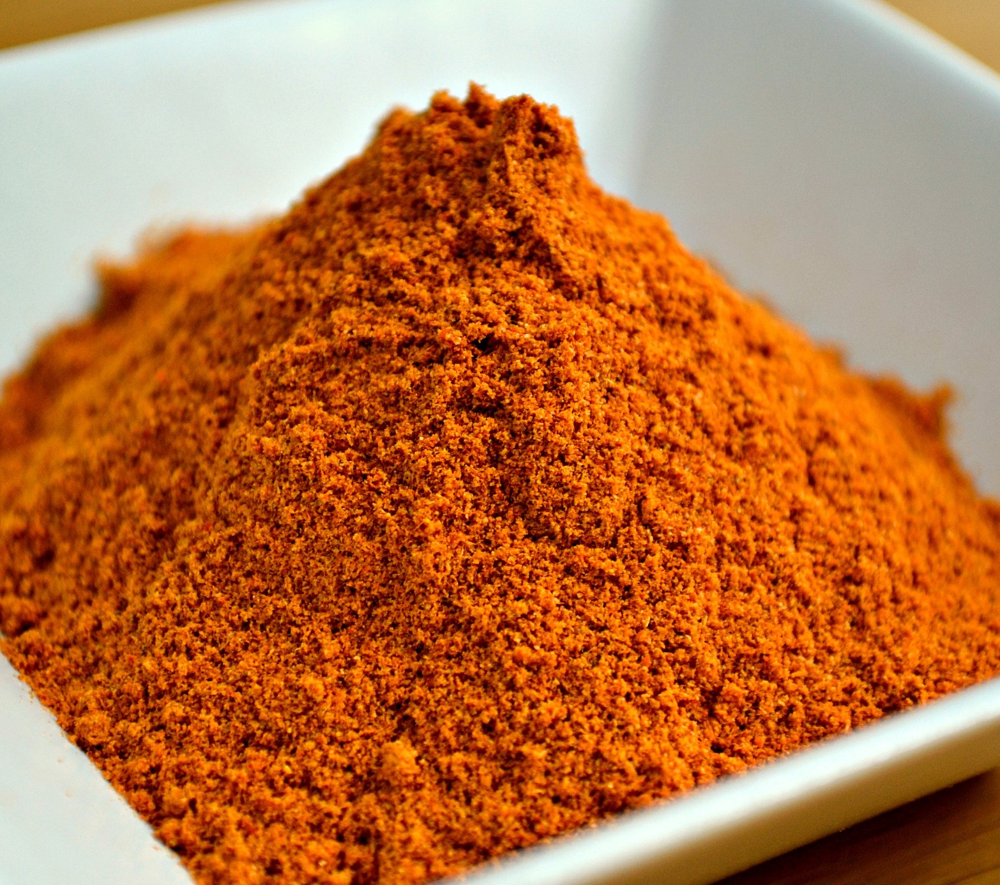
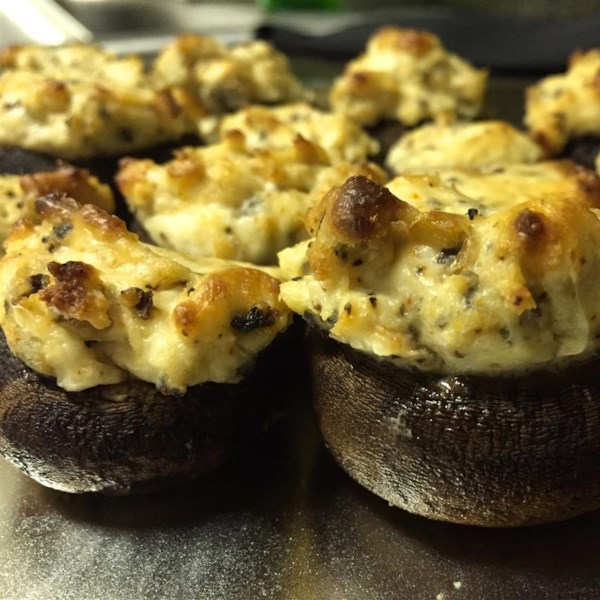

| Ingredient | Amount | Picture |
|---|---|---|
| White Mushrooms | 2 cartons |  |
| Olive Oil | 1 tablespoon |  |
| Garlic | 2 cloves |  |
| Cream Cheese | 1 package (8 oz.) |  |
| Parmesan Cheese | 1/4 cup |  |
| Ground Black Pepper | 1/4 teaspoon |  |
| Onion Powder | 1/4 teaspoon |  |
| Ground Cayenne Pepper | 1/4 teaspoon |  |
| Instructions | ||
|
||
|  | ||